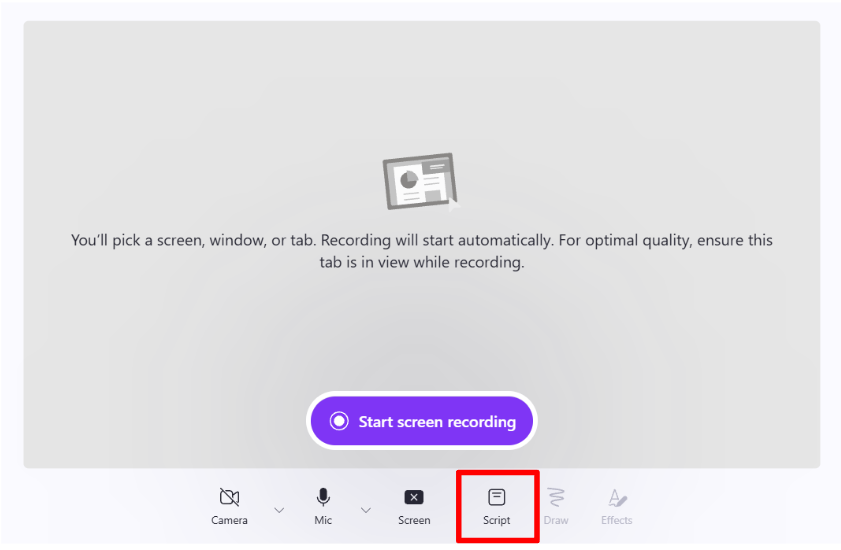
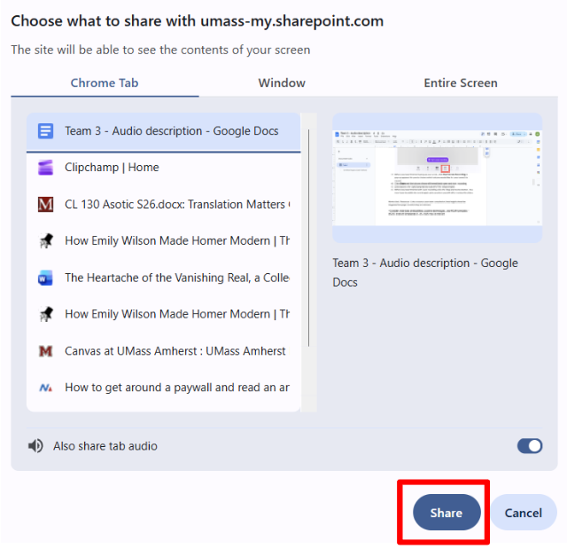

When recording content, you should be sure to use integrated description to keep your content clear for everyone. In order to do this, you can use the teleprompter tool built into ClipChamp.
Click Screen recording on the ClipChamp homepage. A new recording window opens up in your browser.
Click the Script button below the recording screen. A teleprompter opens up and you can now type what you would like to say during the tutorial, including integrated description. It will stay open during the recording.

When you have finished typing up your script, click Start Screen Recording. A popup appears for you to choose which tab you want to record.
Click Share and the tab you chose immediately opens and starts the recording.

Click back to the ClipChamp tab to read from the teleprompter.
When you have finished with your recording, click the Stop and review button. You now have the ability to record again, pick up where you left off, or review the video.